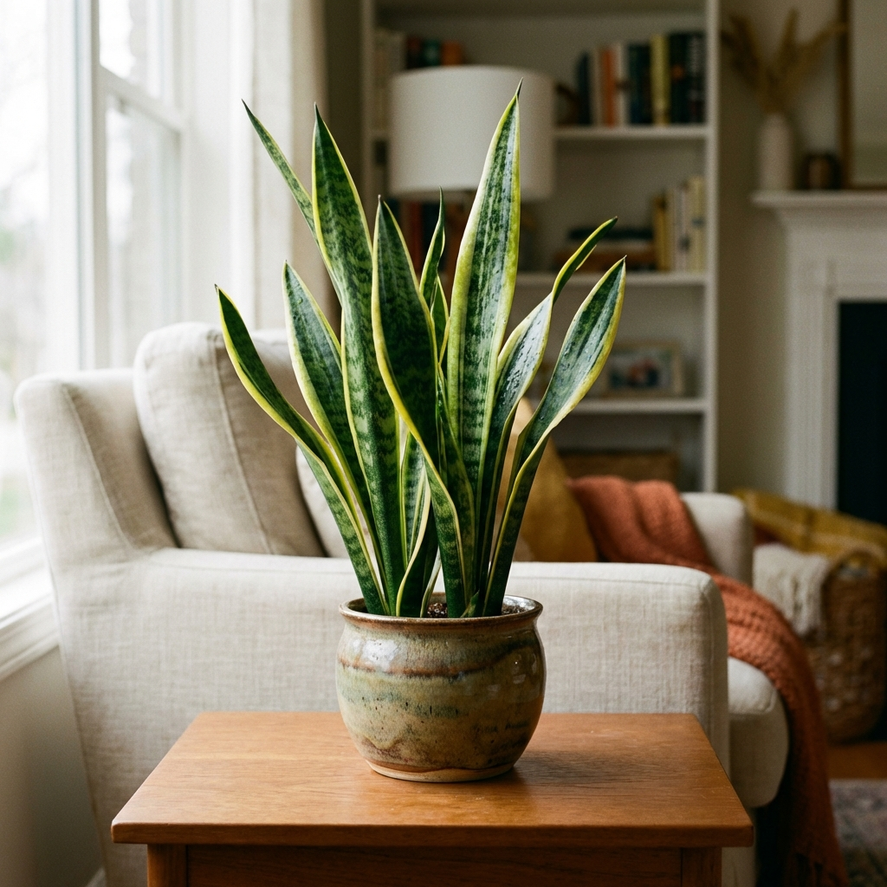

Modern ev dekorasyonunun vazgeçilmezi olan salon bitkileri, sadece görsel bir şölen değil, aynı zamanda hava kalitesini artıran doğal filtrelerdir.
1. Deve Tabanı (Monstera)
Fenomen bitki Monstera, devasa delikli yapraklarıyla ikoniktir. Aydınlık ama direkt güneş almayan köşeleri sever. Toprağı nemli tutulmalı ve yapraklarına sık sık su püskürtülmelidir. Yaprakları tozlandığında nemli bir bezle silmek, fotosentez yapmasını kolaylaştırır ve parlak görünmesini sağlar. Geniş alanlara ihtiyaç duyar, bu yüzden salonunuzun baş köşesini ona ayırmaktan çekinmeyin.

2. Paşa Kılıcı (Sansevieria)
Belki de dünyanın en dayanıklı bitkisi! Az ışıkta yaşayabilir, susuzluğa haftalarca dayanır ve gece oksijen üreten ender bitkilerdendir. Yatak odaları için mükemmel bir tercihtir. Modern ve minimalist duruşuyla özellikle İskandinav tarzı dekorasyonların vazgeçilmezidir. Radyasyonu emici özelliği olduğuna inanılır. Sulamayı unutsanız bile size küsmez, ancak aşırı sulamadan kaçınmalısınız.
3. Barış Çiçeği (Spathiphyllum)
Zarif beyaz çiçekleriyle bilinen Barış Çiçeği, susadığında yapraklarını büker ve size haber verir. Yarı gölge alanları sever ve hava temizleme kapasitesi NASA tarafından onaylanmıştır. Benzen ve formaldehit gibi zararlı gazları havadan temizler. Çiçek açması için dolaylı ışık alması önemlidir ancak doğrudan güneş yapraklarını yakabilir. Nemli ortamları sevdiğinden banyolarda da (ışık alıyorsa) kullanılabilir.

4. Kauçuk Ağacı (Ficus Elastica)
Parlak, deri gibi kalın yapraklarıyla salonlara güçlü bir karakter katar. Hızlı büyüyen bir türdür ve havadard bir ortam ister. Yapraklarının koyu yeşil, bordo veya alacalı varyasyonları bulunur. Bakımı zahmetsizdir; toprağı kurudukça sulamanız ve saksısını 2 yılda bir değiştirmeniz yeterlidir. Büyük saksılarda tavana kadar uzayabilir, bu yüzden yerini baştan iyi seçmekte fayda var.
 Tüm Yazılara Dön
Tüm Yazılara Dön